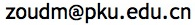

ICSE15_float_result_2sheets.xlsx
- This file contains 2 sheets.
Sheet 1 is the parameter information of 157 GSL functions.
Sheet 2 contains the maximum relative errors detected by LSGA, STD and RAND, and the comparison between these 3 methods.
ICSE15_float_abs_error.xlsx
- This file contains the potential problems identified by LSGA, STD and RAND.
Potential problems: The relative error is larger than 0.1% and the reported absolute error is larger than estimated absolute error by GSL.
Thank you.
If you have any questions, please contact 